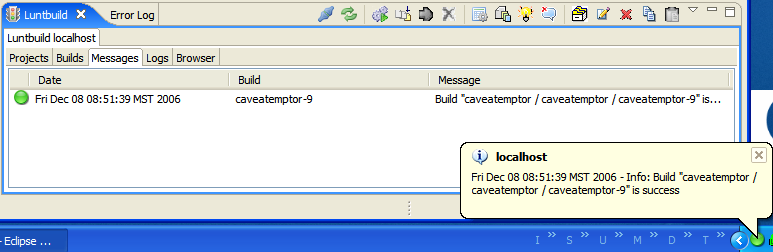
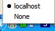

When creating Luntbuild connection Notify condition specifies when the user will be notified. Following conditions are supported:
Following picture shows notification in Messages tab, Tray icon and baloon tooltip after a build successfully finished: 
You can select a configuration to be notified about in the system tray menu: . If Notify condition for this configuration is fullfilled, the tray icon and baloon tooltip reflect the status of the selected configuration.